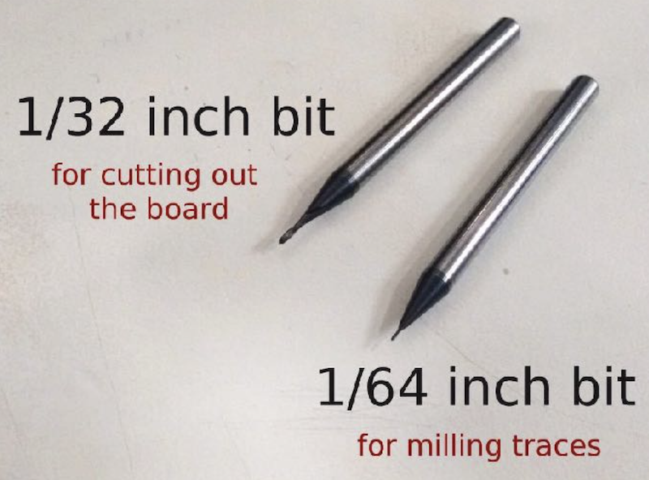
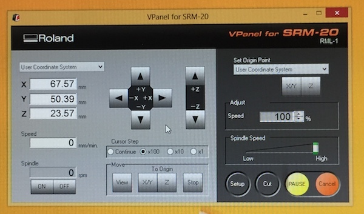
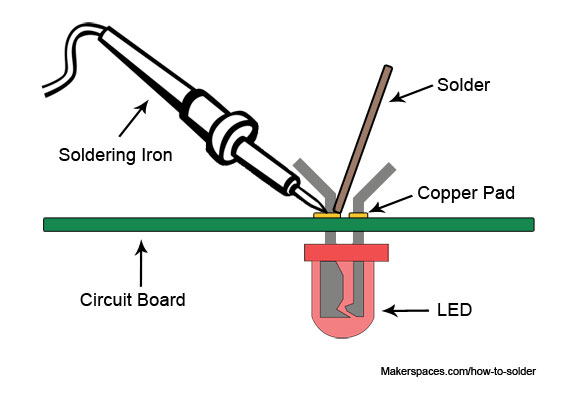

Electronic Production
PCB milling is the act of removing copper from a sheet of printed circuit board material in order to reconstruct pads, signal lines, and structures based on patterns from a layout file, which is a digital circuit board blueprint.
Milling
Double-sided tape is used to secure the material to the machine's bed. Make sure you have double-sided tape that can be taken off the board entirely without leaving any sticky behind! The material's surface must be parallel to the machine's x and y axes.

The endmill is the milling machine's cutting tool. The traces on the material surface were engraved using a 0.4mm endmill, and the material was cut with a 0.8mm endmill. On the machine, the endmill travels in the x, y, and z axes. When moving across the x and y axes, the Z-axis must remain up at all times, else the endmill tip will contact the material bed and shatter.
To begin milling, ensure sure the endmill is positioned at the correct origin on the board. NOTE: The cut begins at the image's left corner. The mill's location may be changed using the program V-Panel for SRM-0. To begin, move the endmill to the material's center to establish the z origin location. Then, with one hand holding the endmill's tip and the other releasing the screw, unscrew it. Allow the tip of the endmill to slowly touch the material surface once the screw has loosened. By clicking on Z under Set Origin Point, you may get the z origin. Then, to establish the mill's x and y origins, shift the z position higher.

Soldering
Soldering is the process of melting solder around a connector to link two or more electrical elements together. Solder is a metal alloy that establishes a strong electrical link between the pieces as it cools.

How to solder
- With some tweezers, lay the component in place.
- Then with one hand, hold the heated soldering iron against the component
- With the other hand, apply solder to the component. The solder shouldn't touch directly the tip of the iron. The component should be hot enough to melt the solder.
- Make sure each end of the component sits flat on the board and is covered in solder. If needed, add more solder on each end.